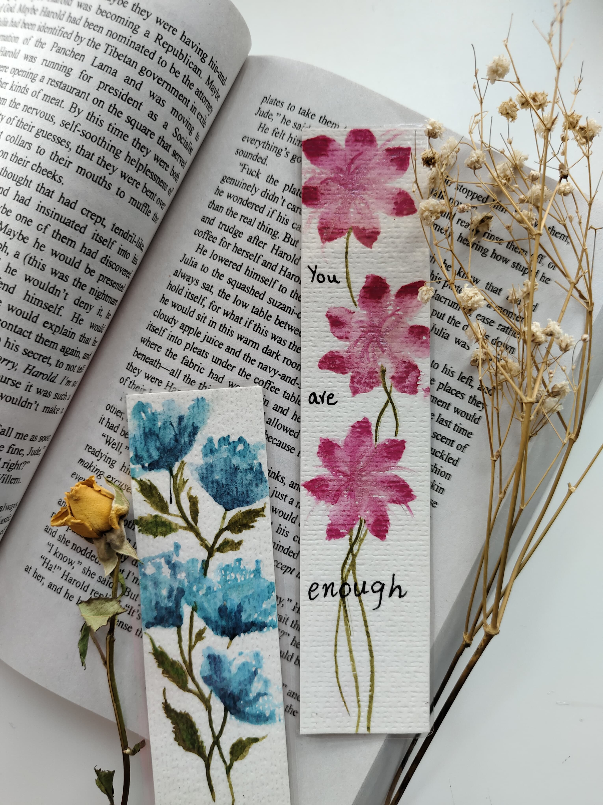

Who I Am
Welcome to Zukhraf Signature Arts, where love is applied in every brushstroke. My name is Zukhraf Zubair, and I create beautiful, handcrafted art pieces, including watercolor art, calligraphy, and unique bookmarks. My journey began with a love for colors and lettering, growing into a passion project.
My Artistic Journey
Art has always been more than a hobby for me—it's a form of self-expression. From experimenting with vibrant watercolors to perfecting the delicate curves of calligraphy, I've dedicated countless hours to mastering my craft. Nature, literature, and fine details are my primary sources of inspiration.

My Art Style & Inspiration
Each piece I create is a reflection of my artistic soul. I love how soft watercolor strokes blend seamlessly with elegant calligraphy and intricate Mandala art. Every artwork has a story to tell.

My Art Studio
My studio is my sanctuary—a space where imagination knows no bounds. Here, surrounded by painting materials, I bring ideas to life. From initial sketches to final touches, each piece is crafted with passion, whether it's a bookmark, Mandala, or calligraphy artwork.